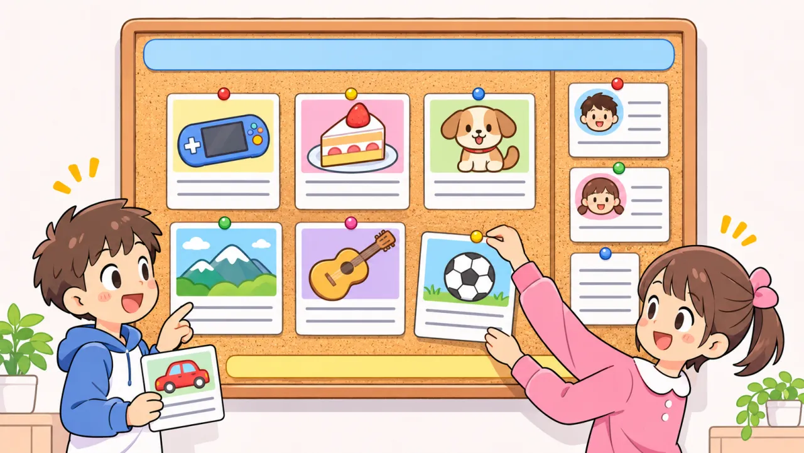

2カラム × タイル型のサイトを作ろう ― 設計図だけ渡すので、コードは自分で考える（できた人向け課題 tile-site）
投稿日 2026年11月16日
03-form が終わった人向けの課題です。
① 2カラムとタイル型ってどんなレイアウト？
② 今回作るサイトの設計図とルール
③ 新しいリポジトリ tile-site を作る
④ 道具とヒントを見ながら、コードは自分で考えて作る
⑤ 公開して提出する
このページには答えのコードは載せていません。載っているのは「設計図」「使う道具（CSS のプロパティ）」「考えるためのヒント」だけです。ヒントは開くたびに少しずつ答えに近づくようになっているので、まずは開かずに考えてみましょう。
1. 2カラムとタイル型ってなに？

Web ページの「並べ方」には名前が付いています。
| 名前 | どんな並べ方？ | よく見る場所 |
|---|---|---|
| 1カラム | 中身が縦に1列だけ | スマホのページ、LP（宣伝ページ） |
| 2カラム | 広いメインと、細いサイドバーが横に並ぶ | ブログ、ニュースサイト |
| タイル型 | 同じ大きさのカードを、床のタイルのように縦横に敷きつめる | YouTube のホーム、ネットショップの商品一覧 |
今回はこの2つを組み合わせます。「ページ全体は2カラム」で、「メインの中身はタイル型」です。ちなみにこの授業資料のトップページも、左（タグ）・中央（記事一覧）・右（お知らせ）の3カラムになっています。開発ツールで中をのぞくと、どう作っているか分かります。
教科書の CHAPTER05（2カラム）と CHAPTER06（タイル型）の先取りです。先にやっておくと、本番の授業がぐっと楽になります。
2. 今回作るもの：設計図とルール
テーマ：「自分の好きなもの」を紹介するサイト
中身は自由です。たとえば「好きなもの図鑑」「おすすめの沖縄スポット」「推しの紹介」「架空のカフェのメニュー」など。自分が作っていて楽しいものを選びましょう。
設計図（ワイヤーフレーム）
必ず守るルール（必須）
| ルール | |
|---|---|
| リポジトリ | 新しく tile-site（Public）を作り、GitHub Pages で公開する |
| ファイル | index.html と style.css（画像を使うなら images/ フォルダ） |
| HTML のタグ | header・main・aside・footer を使う（全部 div にしない） |
| 2カラム | PC の幅では main が左（広い）、aside が右（細い）で横に並ぶ |
| タイル | main の中に6枚以上。PC では3列。1枚に「画像（または色の箱）＋見出し＋短い文」 |
| スマホ | 幅が 767px 以下になったら、aside が main の下に回り、タイルは2列か1列になる |
| 画像 | 自分で撮ったもの・自分で描いたもの・フリー素材だけ。フリー素材はfooter に出典を書く |
公開ページは世界中のだれでも見られます。本名・顔写真・住所・学校名が分かる写真は載せないこと。Google の画像検索で見つけた画像を勝手に使うのもダメです（著作権）。
3. STEP 1. 新しいリポジトリ「tile-site」を作る
フォルダは ch03 の外に作ります。ch03 の中に作ると「Git の中に Git」になって、うまく push できなくなります（理由は VS Code 手順書「親のフォルダがすでに Git につながっていると失敗する」）。
cd ~ # ホームに戻る（ch03 の中にいないこと！）
mkdir tile-site
cd tile-site
code .- GitHub 右上の ＋ → New repository
- Repository name：
tile-site／ Public ／ 「Add a README file」はチェックしない → Create repository index.htmlを1行でも書いたら、初回のアップロード（h-kondoは自分のユーザー名に）
pwd # 最後が /tile-site ならOK
git init
git add .
git commit -m "First commit"
git branch -M main
git remote add origin https://github.com/h-kondo/tile-site.git
git remote -v # tile-site になっているか確認
git push -u origin main- Settings → Pages → Branch：main ／ /(root) → Save
- 数分後、
https://h-kondo.github.io/tile-site/で見られるようになる
今回は index.html がリポジトリの一番上にあるので、URL は /tile-site/ で終わります（ch03 の時の /ch03/03-form/ とのちがいを、3章の「URL の分解」を思い出して考えてみよう）。手順の詳しい説明は VS Code 手順書の STEP 6〜8 と同じです。
4. STEP 2. 自分の設計図を紙に描く
いきなりコードを書かずに、まずノートに四角を描いて決めます。プロの現場でも、最初に作るのは「ワイヤーフレーム」です。
- サイトの名前は？
- タイルに何を並べる？（6つ以上書き出す）
- サイドバーには何を置く？（プロフィール、カテゴリ、おすすめ、お知らせ…）
- 色は何色使う？（3色までにすると、まとまって見える）
5. STEP 3. HTML の骨組みを書く
骨組みの形だけ示します。中身（コメントの部分）は自分で書きましょう。
<body>
<header> サイトの名前 </header>
<div class="container">
<main>
<!-- タイルを並べる「箱」を1つ作り、その中にタイルを6枚以上 -->
<!-- タイル1枚 ＝ 画像 ＋ 見出し ＋ 短い文 -->
</main>
<aside>
<!-- プロフィール・カテゴリなど -->
</aside>
</div>
<footer> コピーライト・画像の出典 </footer>
</body>考えよう
- なぜ
mainとasideだけをdiv class="container"で包むのか？（headerとfooterは包まないのはなぜ？） - タイル1枚には、どのタグを使う？（
div？article？li？ それぞれのちがいを調べてみよう） - スマホで正しく表示するために、
<head>に必ず入れる1行はなに？（03-form のindex.htmlを見返そう）
ヒント：container で包む理由
CSS で「横に並べる」指示は、並べたい要素たちの親に書きます。横に並べたいのは main と aside の2つだけ。だから、その2つだけを1つの親で包みます。
6. STEP 4. 2カラムにする
道具箱
| プロパティ | どこに書く | 何をする |
|---|---|---|
display: flex; | 親 | 子どもたちを横一列に並べる |
gap: 24px; | 親 | 子どもと子どもの間にすき間をあける |
flex: 数字; | 子 | 残りの幅を数字の比率で分け合う（例：2 と 1 なら 2:1） |
max-width: 1100px; | どこでも | これより広がらないようにする |
margin: 0 auto; | 幅が決まった箱 | 左右の余白を自動にして真ん中に寄せる |
考えよう
main と aside を「7：3」で横に並べ、間を 24px あけ、ページ全体は 1100px より広がらずに真ん中に置く。どのセレクタに、どのプロパティを書けばいいでしょう？
ヒント1
上の表の「どこに書く」を見よう。display: flex; と gap は親、flex: 数字; は子。この HTML で main と aside の親はどれ？
ヒント2
親は .container。子は main と aside。比率の数字は「7：3」をそのまま使えます。
ヒント3（うまくいかない時）
横に並ばない → display: flex; を子に書いていませんか？
比率がおかしい → width も一緒に書いていませんか？ まずは flex だけにしてみよう。
真ん中に来ない → max-width と margin: 0 auto; を同じ箱に書いていますか？
7. STEP 5. タイルを並べる
道具箱
| プロパティ | どこに書く | 何をする |
|---|---|---|
display: grid; | 親（タイルの箱） | 子どもたちをマス目に並べる準備をする |
grid-template-columns: | 親 | 何列にするかと、それぞれの列の幅を決める |
fr（単位） | 上の値の中 | 「残りの幅を等分した1つ分」。1fr 1fr なら2列で半分ずつ |
repeat(回数, 幅) | 上の値の中 | 同じ幅を何回もくり返す書き方。repeat(2, 1fr) ＝ 1fr 1fr |
gap | 親 | マス目の間のすき間（flex と同じ） |
aspect-ratio: 4 / 3; | 画像 | 縦横の比率をそろえる |
object-fit: cover; | 画像 | 比率がちがう写真を、ゆがめずに切り取って枠に収める |
考えよう
- タイルを同じ幅で3列に並べるには、どこに何を書く？（
1frを3回書く方法と、repeatを使う方法の2通りある） - 写真の大きさがバラバラで、タイルの高さがそろわない。どうする？
- flex と grid、どちらも「並べる」道具。2カラムには flex、タイルには grid を使うのはなぜだと思う？（逆でも作れる。やってみて、どっちが楽か比べてみよう）
ヒント1
タイルの「箱」（main の中でタイルを包んでいる要素）が親です。そこに display: grid; と grid-template-columns。
ヒント2
「同じ幅」は 1fr。それを「3回くり返す」なら、上の表の repeat の例の数字を変えるだけ。
ヒント3（画像がそろわない時）
img に width: 100%; で枠いっぱいにしてから、aspect-ratio で比率を固定し、object-fit: cover; でゆがみを直します。画像がまだ無い人は、div に背景色を付けて「色の箱」にしておいてもOK。
8. STEP 6. スマホでも見やすくする
道具箱
| 道具 | 何をする |
|---|---|
<meta name="viewport" …> | これが無いと、スマホは PC の画面を縮小して見せる（@media が効かない） |
@media (max-width: 767px) { … } | 画面の幅が 767px 以下の時だけ、{ } の中の CSS を使う |
flex-direction: column; | flex の並びを横から縦に変える |
考えよう
スマホの幅では、①aside を main の下に回し、②タイルを2列にしたい。@media の中で、どのセレクタの、どのプロパティを上書きすればいい？
ヒント1
@media の中には、変えたいところだけを書きます（全部書き直さなくていい）。変えたいのは「2カラムの並ぶ向き」と「タイルの列の数」の2か所。
ヒント2
並ぶ向きは STEP 4 で display: flex; を書いた同じセレクタに flex-direction。列の数は STEP 5 の grid-template-columns を、repeat の数字を変えて上書き。
ヒント3（効かない時）
@media を CSS ファイルの一番下に書いていますか？ CSS は後に書いたものが勝つので、上に書くと元の指定に負けます。それでも効かなければ viewport の1行を確認。
開発ツールで確かめる
- F12 で開発ツール → Ctrl+Shift+M でスマホ表示に切りかえ（Chrome は「デバイスツールバー」、Firefox は「レスポンシブデザインモード」）。上の幅の数字を 767 と 768 で行き来すると、レイアウトが切りかわる瞬間が見える
- Elements（インスペクター）で grid を書いた要素の横に出る
gridのバッジを押すと、マス目の線が表示される - うまくいかない時は、要素をクリックして右の Styles を見る。線で消されている指定は、別の指定に負けている
9. STEP 7. 公開して提出する
git add .
git commit -m "Add tiles"
git push origin main| 提出するもの | URL |
|---|---|
| GitHub URL（コード） | https://github.com/h-kondo/tile-site |
| GitHub Pages URL（完成画面） | https://h-kondo.github.io/tile-site/ |
Classroom の課題に添付されている提出フォームから出してください。
提出前のチェックリスト
tile-siteがch03の外にあり、Public のリポジトリになっているheader・main・aside・footerを使っている- PC の幅で、main（左・広い）と aside（右・細い）が横に並んでいる
- タイルが6枚以上、PC で3列に並び、大きさがそろっている
- 開発ツールのスマホ表示（767px 以下）で、aside が下に回り、タイルが2列か1列になる
- フリー素材を使ったら footer に出典がある。個人情報が写っていない
- 公開ページ（
…/tile-site/）で CSS も画像もちゃんと表示される
評価のめやす
| レベル | できていること |
|---|---|
| 合格 | 「必ず守るルール」とチェックリストを全部満たしている |
| よくできた | 色・余白・文字の大きさがそろっていて読みやすい。タイルの中身が自分のテーマに合っている |
| すごい | 下の「もっと挑戦」を1つ以上やっている。コードを人に説明できる |
もっと挑戦
- タイルにマウスを乗せると少し浮く：
:hover・transform・box-shadow・transitionを組み合わせる - ヘッダーをスクロールしても上に残す：
position: sticky;とtopを調べてみよう - @media を使わずに列の数を自動で変える：
repeat(auto-fill, minmax(220px, 1fr))は何をしている？ 数字を変えて動きを観察し、自分の言葉で説明しよう - タイルの中身を JSON から作る：
data.jsonにタイルの情報を書き、fetchで読み込んで JavaScript でタイルを並べる（フォームの資料の「JSON」の続き。data.jsonは GitHub Pages にファイルとして置けるので、公開ページでも動く） - ダークモード：
@media (prefers-color-scheme: dark)で、OS がダークの時だけ色を変える
この課題の約束
- この課題の目的は「自分で考えてレイアウトを組めるようになる」こと。生成AIにコードを丸ごと書かせて貼るのはなしです
- 分からない言葉・エラーの意味・プロパティの使い方を質問するのはOK（AI でも、検索でも、友だちでも）
- 人のコードを参考にしたら、1行ずつ自分の言葉で説明できるところまで理解してから使う。先生に「ここはどうして？」と聞かれたら答えられるように